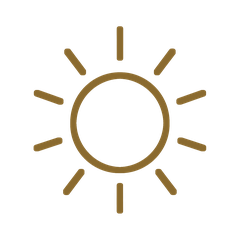
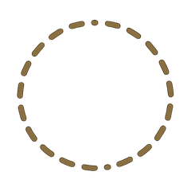
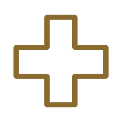
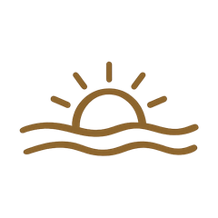
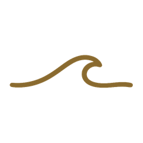
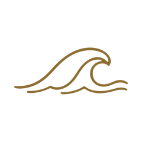
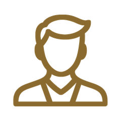
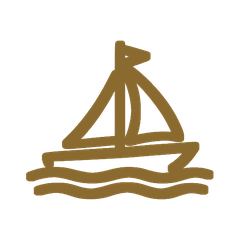
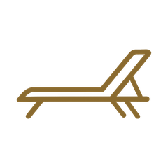

My Meditation Island
Meditationen auf Schweizerdeutsch
für mehr Ruhe, besseren Schlaf und innere Balance
7 Tage gratis testen – ohne Verpflichtung.
Danach CHF 3 im Monat oder CHF 25 im Jahr.
Jederzeit kündbar · neue Meditationen sind immer dabei.
Meditationen auf Schweizerdeutsch
für mehr Ruhe, besseren Schlaf und innere Balance
7 Tage gratis testen – ohne Verpflichtung.
Danach CHF 3 im Monat oder CHF 25 im Jahr.
Jederzeit kündbar · neue Meditationen sind immer dabei.

Deine Insel wartet auf dich.
Stell den Zeiger im Kompass dorthin, wo du gerade stehst.
Wie geht es dir gerade?
Oben und unten zeigst du, ob du dich gerade eher nachdenklich oder eher emotional fühlst. Links und rechts, wie entspannt oder angespannt du dabei bist.
Der Zeiger darf überall in der Scheibe stehen – auch dazwischen. In der Mitte heisst: ausgeglichen.

Setz zuerst den Zeiger oben – dann sage ich dir, was gerade passt.
Was du schon geschafft hast

SchweizerdeutschAntippen für deine Entwicklung
Alle Übungen zum Stöbern
Stell den Zeiger noch einmal ein.

Zieh den Zeiger dorthin, wo du gerade stehst – und halte ihn dann fest.
Zugang, Konto und rechtliche Angaben
Dein Verlauf bleibt nur auf diesem Gerät – kein Konto, kein Server.
Wer dich hier begleitet
Schön, dass du da bist.
Ich bin ganzheitliche Yogalehrerin, Yogatherapeutin und Meditationsleiterin. Die Meditationen auf dieser Insel habe ich alle selbst geschrieben und gesprochen – auf Schweizerdeutsch, weil Worte in der eigenen Sprache am tiefsten ankommen.
Der Kompass ist dabei mein Herzstück: Statt einer langen Liste fragst du dich zuerst, wie es dir gerade wirklich geht – und bekommst genau das, was dazu passt.
Wer diese App betreibt
Yoga Island – Christine Maranta Gutmann
Heinrichstrasse 241
8005 Zürich, Schweiz
E-Mail: chris@yogaisland.ch
Mehr über meine Arbeit: yogaisland.ch ↗
Was mit deinen Daten passiert
Kurz gesagt: Diese App hat keinen eigenen Server und kein Konto. Was du hier einträgst oder tust, bleibt auf deinem eigenen Gerät.
Dein Meditations-Verlauf, deine Favoriten und der Stand deiner Testphase liegen ausschliesslich im lokalen Speicher deines Browsers (localStorage). Diese Daten verlassen dein Gerät nie – es gibt keinen Server, an den sie geschickt werden, und kein Konto, das sie sammelt. Löschst du deine Browserdaten oder wechselst du dein Gerät, sind sie weg; eine Wiederherstellung ist aktuell nicht möglich.
Diese Seite liegt bei GitHub Pages (GitHub Inc., Teil von Microsoft). Wie bei jedem Website-Aufruf verarbeitet der Hosting-Anbieter dabei automatisch technische Zugriffsdaten (z. B. IP-Adresse, Zeitpunkt) – darauf haben wir keinen Einfluss. Details dazu in der Datenschutzerklärung von GitHub.
Diese App setzt keine Cookies und keine Analyse- oder Werbe-Tools ein. Es gibt aktuell keine Möglichkeit für uns zu sehen, wie viele Menschen die App nutzen oder wie sie genutzt wird.
Eine echte Bezahlung ist noch nicht angeschlossen. Sobald das der Fall ist, wird diese Erklärung um die Angaben zum Zahlungsanbieter ergänzt.
Da keine Daten bei uns gespeichert werden, gibt es serverseitig auch nichts, das wir für dich einsehen, ändern oder löschen könnten – das kannst du jederzeit selbst tun, direkt in der App unter Einstellungen → Verlauf löschen, oder indem du die Browserdaten deines Geräts löschst.
Fragen zum Datenschutz? chris@yogaisland.ch
Was My Island ist und wie sie gedacht ist
My Meditation Island ist eine kleine Insel für zwischendurch: geführte Meditationen auf Schweizerdeutsch, von wenigen Minuten bis zur halben Stunde.
Statt einer langen Liste fragst du dich zuerst, wie es dir gerade wirklich geht – angespannt oder entspannt, nachdenklich oder emotional. Daraus stellt die Insel zusammen, was jetzt passt.
Wenn du schon weisst, was du suchst, gehst du direkt auf Meditationen – dort liegt alles nach Themen sortiert, mit Lupe zum Suchen und Stern zum Merken.
Jede abgeschlossene Meditation wird mitgezählt: Tage hintereinander, Minuten, deine Entwicklung als Grafik. Gezählt wird nur die Zeit, die du wirklich gehört hast.
Diese App ist kein medizinisches Angebot. Sie hilft beim Zurruhekommen, ersetzt aber keine ärztliche oder therapeutische Behandlung. Wenn es dir anhaltend schlecht geht, sprich bitte mit einem Menschen, der dich begleiten kann.
Meditiere nie beim Autofahren oder überall dort, wo du aufmerksam sein musst.
Alles bleibt auf deinem Gerät – es gibt keinen Server, der deinen Verlauf sammelt. Was das genau heisst, steht unter Datenschutz.
Etwas gefunden, das nicht stimmt? Schreib an chris@yogaisland.ch.
Für dein Abo auf allen Geräten
Konto und Bezahlung kommen zusammen. Bis dahin brauchst du dich nirgends anzumelden – alles ist offen, und dein Verlauf liegt auf diesem Gerät.
7 Tage gratis, danach wie du magst.
✓ 7 Tage gratis testen – ohne Verpflichtung.
✓ Neue Meditationen sind immer dabei – alles, was dazukommt, ist in beiden Abos ohne Aufpreis enthalten.
✓ Die ganze Bibliothek, von drei Minuten bis zur halben Stunde.
·
Insel gestalten

Ruhig & türkis
Wellig & tiefblau
Mann
Mit dem Boot
Schon auf der InselLive-Vorschau – ändere oben die Optionen